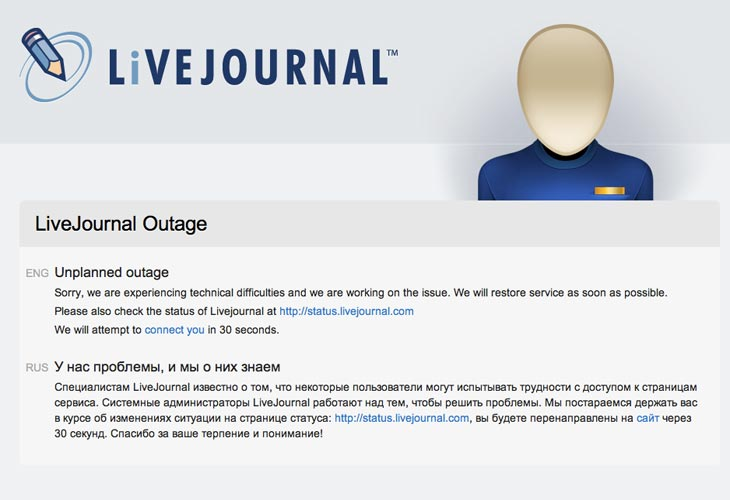
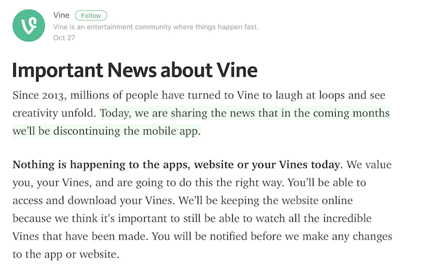
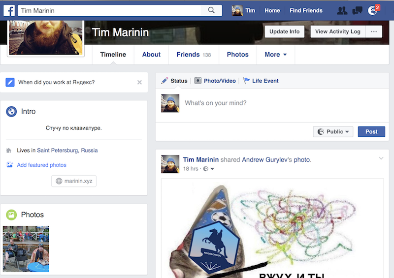
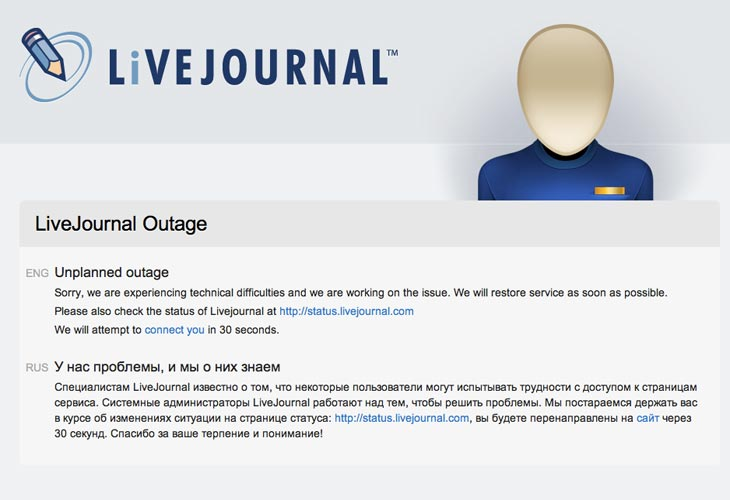
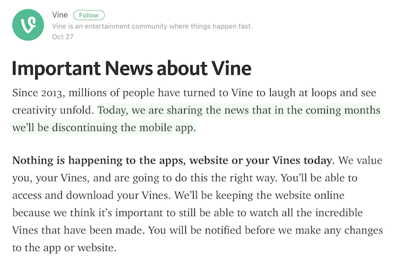
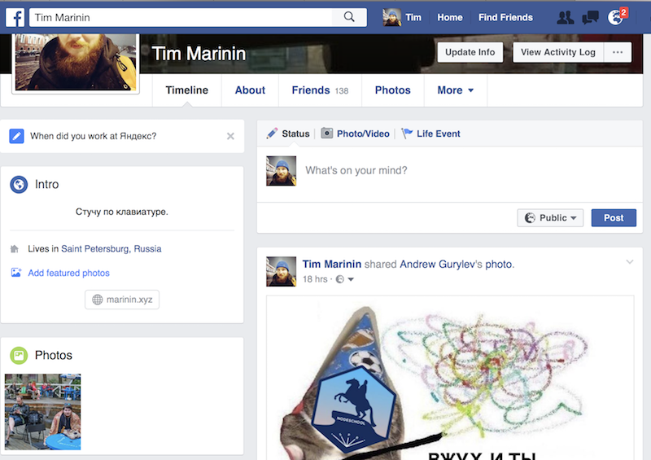
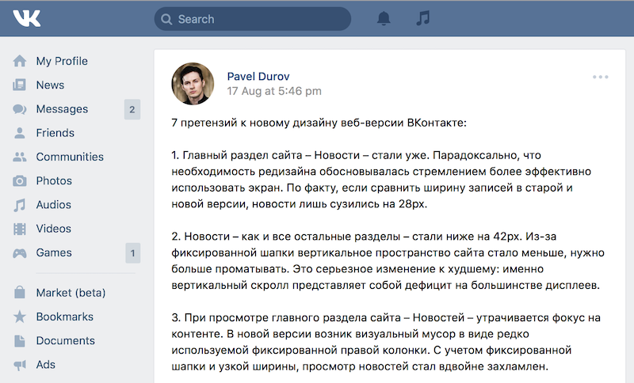
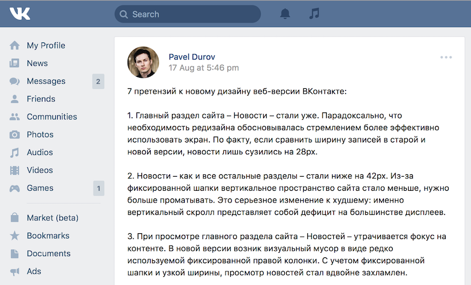

Indieweb, microformats, and web archeology
Brought to you by Tim Marinin

Tim Marinin, @marinintim, marinin.xyz. 2016.
Brought to you by Tim Marinin
Tim Marinin, marinin.xyz.
Software Engineer @ EPAM. I organize NodeSchool SPb.
We take for granted a multitude of services we're using.
Github, VK, Instagram, Medium, Twitter, Swarm—all these are web services focused on creating and consuming content.
Your idenitity is controlled by services of big companies.
Preservation and availability of your content is controlled by services of big and not so big companies.
This is unconsciousness. I hand over my data to companies without thinking about what would happen to it in the future. I don't control who could see it and how long would it be stored.
 





 


When one service becomes the "center", it becomes the single point of failure.
Imagine that Codepen is closed. How many demos would die? How many posts would become useless?
Medium? Github? Instagram?
Services do give us many benefits. Sometimes they bring us new formats (Instagram), sometimes they allow us to work as we never did before (Github).
But there are things that are best done yourself.
people-focused alternative to the "corporate web"
If everyone knows you as friendfeed.com/random_name, what would happend when it closes?
If everyone knows you as random-guy.net, everything is in your own hands.
History of the Web already had seen this (circa 2003).
Web moved very fast from "insignificant" thing to being important part of our life.
You have to accept it: web is here to stay, we should think how to care about it and about our place in it.
We have two unpleasant alternatives: full anonymity and entering the web via [corporate] passport.
But where is the place what you could call home?
Indieweb is not the first initiative in this space. There was, for example, Federated Social Web.
But their focus is on UX and results, not kilobytes of email discussions.
Tantek Celik. Aaron Parecki.
Some of them work at W3C, among other things, at standartization of Indieweb technologies: WebMention, MicroPub.
Posts, photos, code, pictures. Indieweb gives you principles from which you could build your own "federated" social network, which could be better than all of the existing ones.
Automatic crossposting from your site to social networks. Gathering feedback from social networks to your site.
I will not mention Metcalf's law I will not mention Metcalf's law I will not mention Metcalf's law I will not mention Metcalf's law
IndieAuth: it's like Sign-in with Facebook/Github/Twitter, making the connection to these services indirect.
WebMention: pingbacks on steroids^W, done right.
«Events»: these people could respond to invites from their own sites
HTML with microformats as building blocks.
<main class="h-card"><h1 class="p-name">Tim Marinin</h1><p class="p-note">As seen on <a rel="me" href="https://github.com/marinintim">Github</a>,<a rel="me" href="https://twitter.com/marinintim" rel="me">Twitter, ...You can write me at mt@marinin.xyz.</p></main>
* if you are interested in it.
There are contraindications, consult your web master.
No actual independence
is guaranteed. Terms and conditions apply. Resistance is futile. All your base are belong to us. We are the adults now. If not we, then meawho.
You are creating content. You publish it on the Web.
Sadly, bits rote faster than paper. What would remain after we'd gone?
I've seen photos of my grandgrandpa. Would my grandgrandchildren see my selfies?
Obviously, you heard of them. Wayback machine. #250 in the world with 150 in staff.
And like Wikipedia, they also need your donations.
I can't imagine Mars colony chatting with Earth in Slack.
But what they use email and complain about it—with ease.